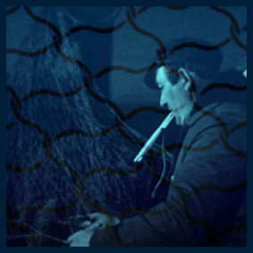

Resources
-
Coasts of Scotland on marine charts, 1580s-1900s.
This is just a small sample of fishing and coastal related archive films in the National Library collections. Find more on our Moving Image Archive website at movingimage.nls.uk -
FISHING FLEET 1939 ref 1595 -
FISHING AND STORM AT HARBOUR 1930s -
IN GREAT WATERS 1974 -
ISLANDS OF THE WEST 1972 -
 OUT SKERRIES 1978 -
ST. KILDA - BRITAIN'S LONELIEST ISLE 1923/1928 -
TRAWLING IN THE DEEP 1948
Non-Library publications
A Glossary of Scottish Dialect Fish and Trade Names
Produced by the Department of Agriculture and Fishers for Scotland in 1989.
Downloadable learning activities
Useful links
- Coastal Communities Network Scotland
communitiesforseas.scot/ - Historic Environment Scotland, Marine Heritage
historicenvironment.scot/advice-and-support/listing-scheduling-and-designations/marine-heritage/ - Sail Scotland
www.sailscotland.co.uk/ - SCAPE works with the public to research, investigate, interpret and promote the archaeology of Scotland’s coast
scapetrust.org/ - Scottish Canals
www.scottishcanals.co.uk/ - Scottish Fisheries Museum
scotfishmuseum.org/ - Scottish Maritime Museum
scottishmaritimemuseum.org/ - Scottish Natural Heritage – Coasts and Seas
nature.scot/landscapes-and-habitats/habitat-types/coast-and-seas - Visit Scotland – Year of Coasts and Waters 2020
visitscotland.com/ycw2020